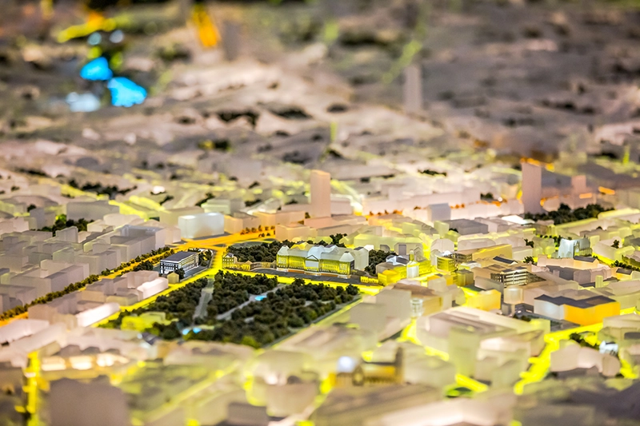

Bruxelles Expérience
L’autre lundi matin avec l’école on est allé au musée « Bruxelles Expérience » sur la place royale (tu montes et c’est la porte à gauche). C’est une expo interactive sur Bruxelles (comment t’as deviné ?). Ça parle de son histoire, de sa place en tant que région de Belgique et dans l’Europe. On y apprend toutes sortes d’informations. Comme par exemple, le fait que le bruxellois mange 8kg de chicon par an (waaaaa) ou qu’il jette 1kg de déchet en moyenne PAR JOUR (berk). Dans le fond c’est un peu comme visiter la page Wikipédia de la ville mais en 3D.
Comme on était un groupe scolaire, on fait un jeu à mi-chemin entre le Trivial-Poursuit et le Fort Boyard où il fallait, par équipe de 3, trouver les réponses aux questions dans les différentes salles de l’expo. C’est bien pour pousser à la curiosité et en même ça nous a permis de nous découvrir entre les différents stagiaires. Ce qui était chouette il y avait une maquette géante de la ville avec des lumières qui affichent les endroits de la ville avec un panneau interactif pour naviguer tout ça. Des photos tailles réelles des habitant de la ville, qui montre bien le côté divers et cosmopolite de la ville. Par contre la nature compétitive du jeu nous a poussé à tout faire en courant, alors je pense qu’on a zappé pas mal d’infos. Et la madame de l’accueil a refusé que Yanis et Youcef fassent un bras pour déterminer le gagnant alors on était un peu déçus. N’empêche, big up l’équipe du musée et big up à Karen !
Après, je sais pas si je recommande. Ça reste très anecdotique culturellement. C’est peut-être dû au fait qu’on a fait le jeu le plus vite possible… Et j’ai l’impression que la ville essaie de me convaincre qu’elle est cool alors que je suis déjà convaincu, hein ! Sinon je serais rentré dans mon pays. Aussi on sait tous que Bruxelles a une culture de la dérision et de l’absurde (dédicace Magritte) qui ne transpire pas du tout dans ce musée. Tout est très terre à terre et 1er degrés. Je reste sur ma faim. Bref, vas-y toi-même, dis-moi quoi !
-Bisou, Jon